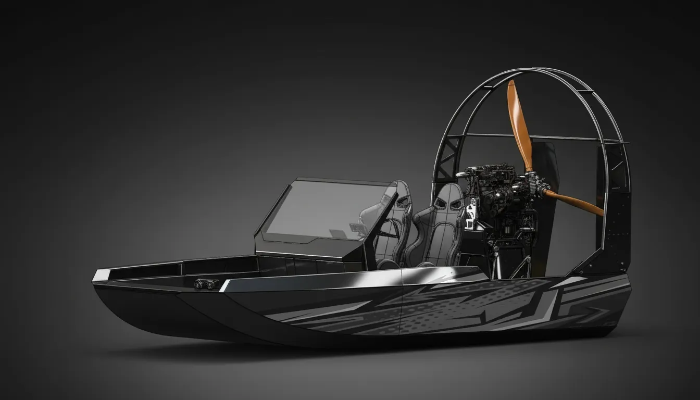

Мы строим собственную испытательную лодку — чтобы проверить каждую систему AILUOHAI в реальных условиях, прежде чем она попадёт к клиентам.
Алюминиевая аэролодка 5,5 м с мотором, переделанным из Nissan HR12DDR, — под мощность около 175 л.с. и под управлением нашего блока Cat-GDI4. На борту установлена вся наша электроника.
Мы молодая компания с большим опытом за плечами: больше 10 лет проектирования аэролодок и больше 5 лет в управлении двигателями и электронике. В этой лодке всё сходится вместе.
Лодка показывает и то, что мы умеем: корпус, силовая установка и электроника спроектированы одной командой. То же самое мы делаем для клиентов — от внедрения наших систем на вашу лодку до разработки электроники с нуля.
Единая система управления всей лодкой: приборная панель, управление двигателем, управление питанием и программы работают как одно целое. «Легион» в разработке, и именно на этой лодке он создаётся и испытывается.
Расчётные значения, будут подтверждены испытаниями.
Прокрутите, чтобы увидеть, как устроена лодка.
Цельноалюминиевая лёгкая двухместная аэролодка с подрессоренными сиденьями. Главная идея — модульность: рулевая колонка, сиденья и вся силовая установка снимаются, и лодку можно собрать так, как нужно именно вам.
Корпус сварен из алюминиево-магниевого сплава АМг5 вместе с ограждением воздушного винта.
Набор корпуса облегчён максимально: всё, что не несёт нагрузку, вырезано.
Открытый корпус без оборудования: всё — колонка, сиденья, силовая установка — крепится к набору. Днище подшито полиэтиленом PE500, чтобы защищать корпус на мелких речках, камнях, траве и болотах.
Крепления ограждения воздушного винта на корме усилены, как и само ограждение: оно принимает удары веток, деревьев и другие сильные удары.
Съёмная автономная силовая установка на базе Nissan HR12DDR и нашего блока управления Cat-GDI4.
В основе — Nissan HR12DDR: компактный алюминиевый трёхцилиндровый мотор 1,2 л с непосредственным впрыском, весом чуть больше 80 кг.
Заводской компрессор заменён доработанной турбиной Garrett GT2860. Перепускным клапаном управляет электрический сервопривод Volkswagen — наддув регулируется точно и точно ограничивается.
Впускной коллектор перепроектирован, сделан новый интеркулер, путь от турбины до впуска в головку — максимально короткий: мотор раздувается быстро, без задержки.
Максимально лёгкий ременной редуктор, спроектированный под этот мотор. Качественные подшипники рассчитаны на большую долговременную нагрузку, все подшипниковые узлы закрыты сальниками. Муфта гасит вибрации между винтом и мотором.
В топливном баке на 60 литров стоят два насоса, которые переключаются автоматически или вручную. Так в рампе всегда держится нужное давление топлива, и всегда есть аварийный резервный насос. Здесь же установлены два лёгких гелевых аккумулятора.
Система охлаждения сделана по авиационному типу: радиатор стоит внутри кожуха, в специальном диффузоре. Винт лучше продувается и меньше затеняется. Главная задача, которую она решает: зимой мотор не замерзает и быстрее прогревается, летом не перегревается — заслонка открывает и закрывает радиатор по необходимости.
Мотором управляет наш блок Cat-GDI4 с непосредственным впрыском, установленный на раме силовой установки. У него есть автостарт с диагностикой: мотор запускается по команде, а все неисправности проверяются и передаются на Dash-6.8.
Силовая установка полностью автономна и просто отключается от лодки: ей нужны только сигнал зажигания и команда на пуск. По CAN она передаёт на Dash-6.8 все ошибки, обрывы и диагностику — насосы, исполнительные механизмы, блоки управления двигателем, массы и всё остальное, что установлено.
Целевая мощность — около 175 л.с. Мотором управляет наш блок Cat-GDI4, настройка — через BrainBus.
От первой 3D-модели до испытаний на воде.
Алюминиевый корпус, кокпит, ограждение воздушного винта и моторама полностью спроектированы в 3D.
Электроника лодки — основа «Легиона»: приборная панель, управление двигателем, управление питанием и программы.
Спроектированы турбо-переделка HR12DDR, система охлаждения и ременной редуктор 2,78 : 1.
Лодка собирается: корпус, силовая установка и электроника соединяются вместе, системы проходят испытания на стенде и на лодке.
Работа всей системы «Легион» на воде: калибровка мотора, нагрузка винта, вибрация и реальные условия эксплуатации.
Сборка, первый запуск мотора и испытания на воде — на видео, по мере того как лодка собирается.